An Abaqus-MATLAB tutorial for Jointed Systems
Table of Contents
1. Preprocessing
The Brake-Reuß Beam (BRB) is a 3-bolted lap-joint beam which will serve as our tutorial joint structure (read more about the benchmark here). To make the tutorial self-contained, the tutorial will begin with CAD-modeling of the BRB in Abaqus and take you all the way to matrix extraction and nonlinear dynamics analysis on MATLAB/OCTAVE. Buckle up! :)

Figure 1: Geometry of the BRB Benchmark
A picture of the parts of the BRB is shown in Fig. 1 and this will be used to guide the modeling here. Standard 5/16 bolt-nut-washers will be used for the assembly. Since Bolt thread interactions won't be modeled here, the bolt shank is modeled as a smooth cylinder (see 2.2 for more details on bolt prestress modeling).
Note: If you already have a model of your structure and want to just apply the node-selection/matrix extraction, you can safely ignore the sections particular to the modeling of the BRB and just go through the remaining, whose instructions are quite general. The general principles in the modeling section are, however, recommended for all jointed structure modeling.
1.1. A Note on Python Scripting
Abaqus Python scripting is quite powerful and will be used quite liberally throughout this tutorial. The following are some tips/tricks to get started for beginners:
- For beginners, the easiest way to start scripting is to open up CAE (the GUI) and do the necessary tasks. Abaqus would have saved the actions in a Python file called
abaqus.rpy. This is just python code that can be imported into abaqus to repeat the same tasks. All standard python commands work so this makes it very helpful. - On Windows the work directory may be an unfamiliar concept (on Linux it is just the directory from which Abaqus is launched). This directory can be manually set by
File->Set Work Directory, following which all the files (including theabaqus.rpyfile) will be put in the specified folder. - Fig 2 shows a pictorial overview of the different options available in Abaqus for scripting support. The Abaqus PDE can be used for Abaqus python script development.
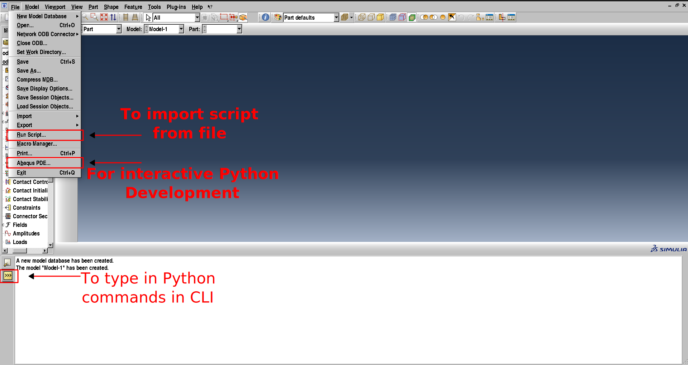
Figure 2: Options in Abaqus for Scripting
1.2. Modeling Parts Script GUI
We will first model the two "halves" of the BRB. The following steps enumerate the process (can be skipped if you already have a model).
We will do the construction through Abaqus Python code that can be imported through File->Run Script or just typed into the command line.
First import the following code to import all the necessary objects and then the material properties (steel, here).
1: # -*- coding: utf-8 -*- 2: import sys 3: 4: from part import * 5: from material import * 6: from section import * 7: from assembly import * 8: from step import * 9: from interaction import * 10: from load import * 11: from mesh import * 12: from optimization import * 13: from job import * 14: from sketch import * 15: from visualization import * 16: from connectorBehavior import * 17: 18: mdl = mdb.models['Model-1'] 19: ############################## 20: # MATERIAL PROPERTIES: STEEL # 21: ############################## 22: mdl.Material(name='STEEL') 23: 24: steel = mdl.materials['STEEL'] 25: steel.Density(table=((7800.0, ), )) 26: steel.Elastic(table=((2e11, 0.29),)) 27: mdl.HomogeneousSolidSection(material='STEEL', name= 28: 'Section-1', thickness=None)
The above code creates a new material called "STEEL", with Young's Modulus 200GPa, Poisson's ratio 0.29, and density 7800 kg/m3.
Now use the following to model the half beam (this can be done on CAE with the GUI quite easily).
29: mdl = mdb.models['Model-1'] 30: 31: ################### 32: # PART : HALFBEAM # 33: ################### 34: # 1. Sketch and Extrude 35: mdl.ConstrainedSketch(name='__profile__', sheetSize=2.0) 36: sktch = mdl.sketches['__profile__'] 37: sktch.Line(point1=(-36e-2, 1.27e-2), point2=(-6e-2, 1.27e-2)) 38: sktch.Line(point1=(-6e-2, 1.27e-2), point2=(-6e-2, 0)) 39: sktch.Line(point1=(-6e-2, 0), point2=(6e-2,0)) 40: sktch.Line(point1=(6e-2,0), point2=(6e-2,-1.27e-2)) 41: sktch.Line(point1=(6e-2,-1.27e-2), point2=(-36e-2,-1.27e-2)) 42: sktch.Line(point1=(-36e-2,-1.27e-2), point2=(-36e-2,1.27e-2)) 43: 44: mdl.Part(dimensionality=THREE_D, name='HALFBEAM', type=DEFORMABLE_BODY) 45: hfbm = mdl.parts['HALFBEAM'] 46: hfbm.BaseSolidExtrude(depth=25.4e-3, sketch=sktch) 47: del sktch 48: 49: # 2. Cut out Holes 50: mdl.ConstrainedSketch(name='__profile__', sheetSize=2.0, 51: transform= 52: hfbm.MakeSketchTransform( 53: sketchPlane=hfbm.faces[2], 54: sketchPlaneSide=SIDE1, 55: sketchUpEdge=hfbm.edges[8], 56: sketchOrientation=RIGHT, 57: origin=(0.0, 0.0, 1.27e-2))) 58: sktch = mdl.sketches['__profile__'] 59: cs = [-3e-2, 0.0, 3e-2]; 60: gs = [] 61: for i in range(3): 62: gs.append(sktch.CircleByCenterPerimeter(center=(cs[i], 0), 63: point1=(cs[i]+0.85e-2/2, 0))) 64: 65: hfbm.CutExtrude(sketchPlane=hfbm.faces[2], sketchPlaneSide=SIDE1, 66: sketchUpEdge=hfbm.edges[8], 67: sketchOrientation=RIGHT, sketch=sktch) 68: 69: 70: # 3. Partition object 71: hfbm.PartitionCellByExtendFace(cells=hfbm.cells, 72: extendFace=hfbm.faces[6]) 73: hfbm.PartitionCellByExtendFace(cells=hfbm.cells, 74: extendFace=hfbm.faces[7]) 75: 76: mdl.ConstrainedSketch(name='__profile__', sheetSize=2.0, 77: gridSpacing=30e-3, transform= 78: hfbm.MakeSketchTransform( 79: sketchPlane=hfbm.faces[11], 80: sketchPlaneSide=SIDE1, 81: sketchUpEdge=hfbm.edges[27], 82: sketchOrientation=RIGHT, 83: origin=(0.0, 0.0, 1.27e-2))) 84: sktch = mdl.sketches['__profile__'] 85: cs = [-3e-2, 0.0, 3e-2]; 86: wor = i2m*0.34375 87: for i in range(3): 88: sktch.CircleByCenterPerimeter(center=(cs[i], 0), 89: point1=(cs[i]+wor, 0)) 90: hfbm.PartitionCellBySketch(cells=hfbm.cells, sketch=sktch, 91: sketchUpEdge=hfbm.edges[27], 92: sketchPlane=hfbm.faces[11]) 93: hfbm.PartitionCellByExtrudeEdge(cells=hfbm.cells, edges=hfbm.edges[0], 94: line=hfbm.edges[-1], sense=FORWARD) 95: hfbm.PartitionCellByExtrudeEdge(cells=hfbm.cells, edges=hfbm.edges[3], 96: line=hfbm.edges[-1], sense=FORWARD) 97: hfbm.PartitionCellByExtrudeEdge(cells=hfbm.cells, edges=hfbm.edges[6], 98: line=hfbm.edges[-1], sense=FORWARD) 99: 100: pt = hfbm.InterestingPoint(edge=hfbm.edges[-2], rule=MIDDLE) 101: hfbm.PartitionCellByPlanePointNormal(cells=hfbm.cells, point=pt, normal=hfbm.edges[-2]) 102: 103: pt = hfbm.InterestingPoint(edge=hfbm.edges[75], rule=MIDDLE) 104: hfbm.PartitionCellByPlanePointNormal(cells=hfbm.cells, point=pt, normal=hfbm.edges[75]) 105: 106: pt = hfbm.InterestingPoint(edge=hfbm.edges[39], rule=MIDDLE) 107: hfbm.PartitionCellByPlanePointNormal(cells=hfbm.cells, point=pt, normal=hfbm.edges[39]) 108: 109: pt = hfbm.InterestingPoint(edge=hfbm.edges[85], rule=MIDDLE) 110: hfbm.PartitionCellByPlanePointNormal(cells=hfbm.cells, point=pt, normal=hfbm.edges[85]) 111: 112: pt = hfbm.InterestingPoint(edge=hfbm.edges[39], rule=MIDDLE) 113: hfbm.PartitionCellByPlanePointNormal(cells=hfbm.cells, point=pt, normal=hfbm.edges[39]) 114: 115: pt = hfbm.InterestingPoint(edge=hfbm.edges[41], rule=MIDDLE) 116: hfbm.PartitionCellByPlanePointNormal(cells=hfbm.cells, point=pt, normal=hfbm.edges[41]) 117: 118: pt = hfbm.InterestingPoint(edge=hfbm.edges[111], rule=MIDDLE) 119: hfbm.PartitionCellByPlanePointNormal(cells=hfbm.cells, point=pt, normal=hfbm.edges[111]) 120: 121: pt = hfbm.InterestingPoint(edge=hfbm.edges[135], rule=MIDDLE) 122: hfbm.PartitionCellByPlanePointNormal(cells=hfbm.cells, point=pt, normal=hfbm.edges[135]) 123: 124: # 4. Assign Material 125: regn = hfbm.Set(cells=hfbm.cells, name='Set-1') 126: hfbm.SectionAssignment(region=regn, sectionName='Section-1')
Scripting note
You can see that certain faces and edges were used in the above. A quick way to check which face is what will be to use the
highlightcommand on the Abaqus python console. Here is an example:
At the end of this step, you should have a partitioned part that looks like this. The partitioning is done in this way to help with the seeded meshing, constraint enforcement, etc.

IMPORTANT! Geometry Correction Note
You have to ensure that the curved edges on the above are, indeed, single edges. You will run into meshing issues if this is not the case. If not, you will have to use the "Merge Edges" tool in the Part module and individually select each edge and merge them.
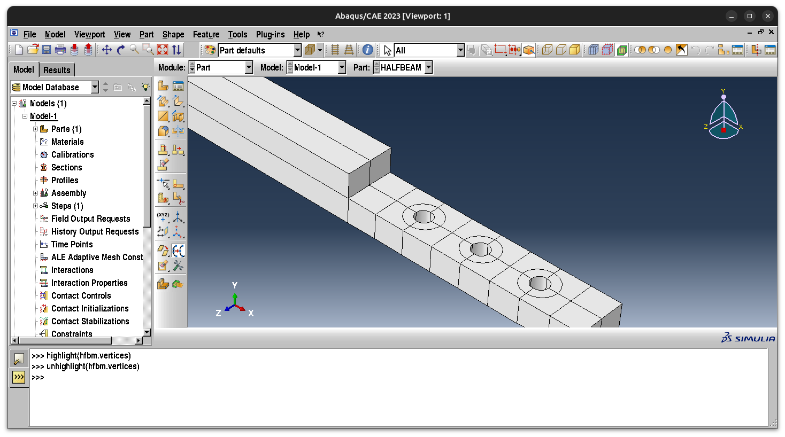
Create a Reference Point Part called
REFPT. This will be necessary for the application of bolt prestress (see 2.2 below).127: rpt = mdl.Part(name='REFPT', dimensionality=THREE_D, 128: type=DEFORMABLE_BODY) 129: rpt.ReferencePoint(point=(0.0, 0.0, 0.0)) 130: 131: rpt.Set(name='Set-1', referencePoints=rpt.referencePoints.values())
Now import the nuts, washers and bolts by importing the file https://github.com/Nidish96/Abaqus4Joints/blob/main/scripts/c_nutwasherbolt_516.py. You should be able to see the nut, washer and bolt, along with the half beam \& reference point created before, as follows after importing:
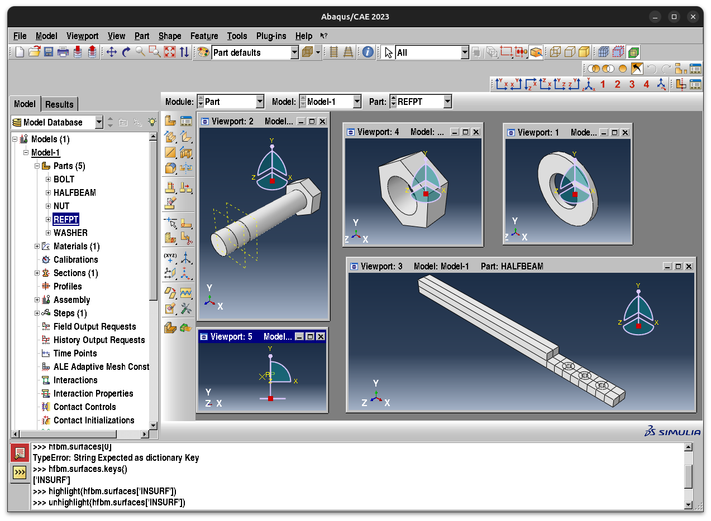 The Python script also assigns the material "STEEL" (see above) to the parts.
The file ../assets/assembly/model_step0.cae stores the CAE file at the end of the above steps (building parts, & partitioning). REGENERATE THIS AFTER THE PARTITIONED BOLT IS USED!
1.3. Creating appropriate surface sets GUI
It is necessary to choose appropriate surface sets for the constraint enforcement and, eventually, the interfacial mesh extraction. Doing this with surfaces (before meshing) is advantageous since the same scripts can be reused even if the model is remeshed.
First select the interfacial faces on the half beam model and assign the name
INSURFto it. You can do this throughTools->Surface->Createand then selecting the appropriate faces through the GUI. Select the faces by holdingShiftand deselect by holdingCtrl. Here is a picture of the surface highlighted in the viewport.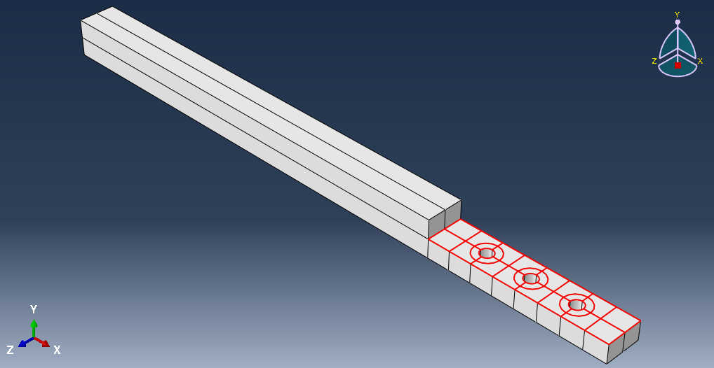
Turn to the outside of the beam and select the faces around the bolts individually and name them
BmW1,BmW2, andBmW3respectively. These will be tied to the washer for the analysis. (BmWidenotes the ith Beam-Washer contact). Here is a picture of the relevant surfaces highlighted (using different colors for each).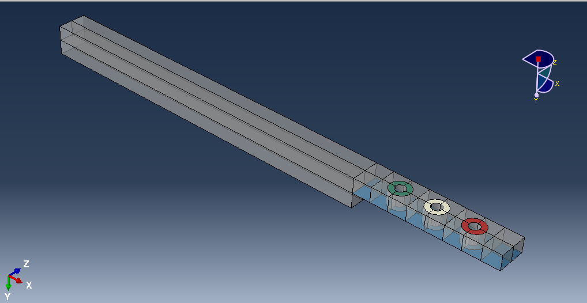
Create two surfaces on the
BOLTmodel as shown in the figure below. Name the surface marked white asBlWand the surface marked green asBN. (BlWdenotes the Bolt-Washer contact surface;BNdenotes the Bolt-Nut contact surface)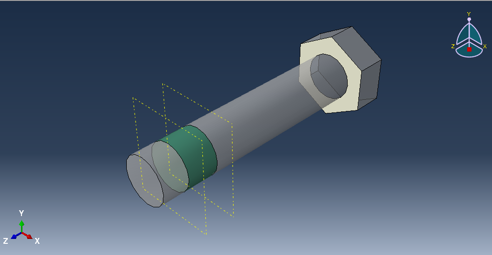
Create two surfaces on the
NUTmodel as shown in the figure below. Name the white surface asNWand the green surface asNB. (NWdenotes the Nut-Washer contact surface;NBdenotes the Nut-Bolt contact surface) Note the direction axes carefully.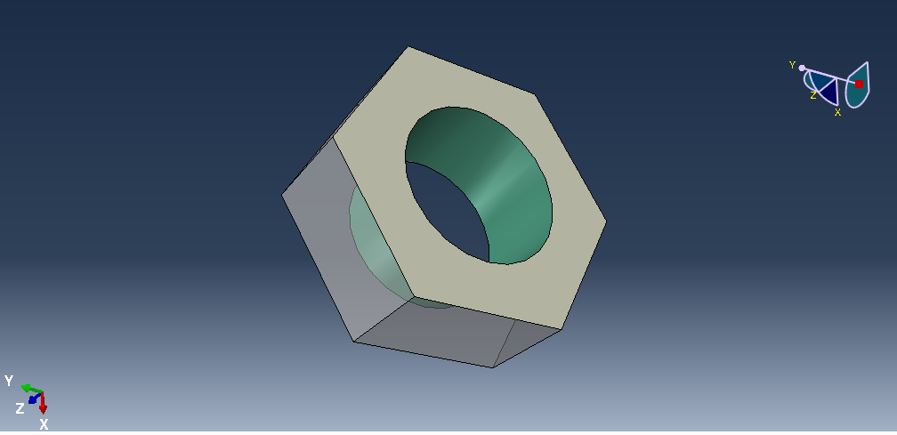
Create two surface on the
WASHERmodel and label them asWSTOP&WSBOT(short for Washer-Surface Top & Bottom). Here is a graphical depiction of the model with the surfaces.
Now all the parts have been created and relevant surfaces have been identified. Note: It is important to have traceable but short names so that a lot of the repetitive tasks can be sped up considerably using scripting.
1.4. Create Assembly GUI
Note: While importing the parts, choose Instance Type as "Independent (Mesh on Instance)". This will be advantageous if we want to modify the meshes just at the interface for mirror symmetry. We will do independent meshing since it is good practice, although independent meshes are not a requirement for this example (dependent meshes can be used due to symmetry).
Import the two beams and re-orient/move them as follows. Note that the bolt-axis has to be pointed in the +z direction. This will be the convention followed throughout this tutorial. The green beam in the following is renamed as
TOPBEAMand the white beam in the following is renamed asBOTBEAM.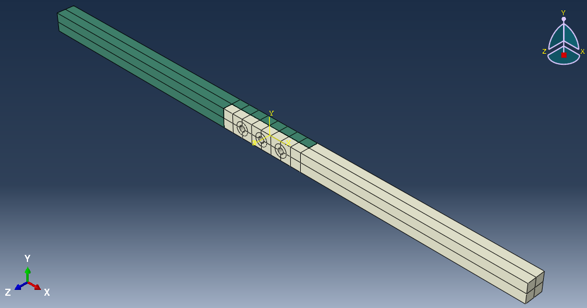
Import one instance each of the
BOLT&NUTand 2 instances of theWASHERand assemble them as shown. Ensure that the washer is oriented (on each side) with theWSTOPoriented in the-zdirection and theWSBOTis oriented in the+zdirection. Rename the washer instances in the top & bottom asTOPWASHER-1andBOTWASHER-1respectively. Rename the bolt and nut asNUT-1andBOLT-1respectively.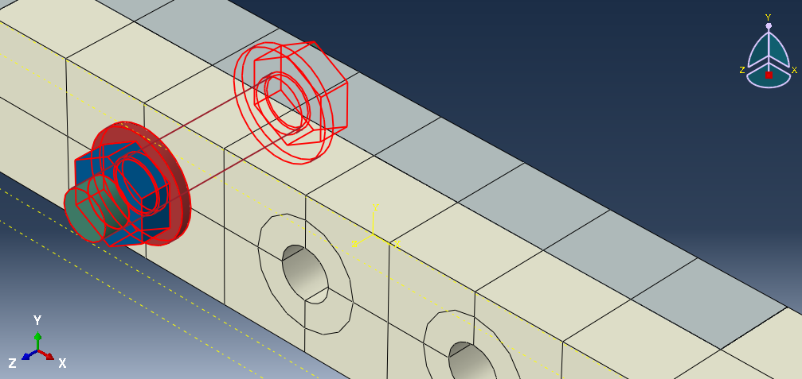
Import one instance of the reference point
REFPT. As mentioned before, this will be used to enforce bolt prestress. This will be achieved by first placing it at the centroid of the intersection of theBOLTandNUT(surfacesBNandNB). It is important that the reference point is placed at the centroid. This can be done in the GUI by first moving it to an external point and then translating it along the axis. The figure below shows an example (a datum point was used for this here). Rename this toBPT-1(standing for Bolt Point 1).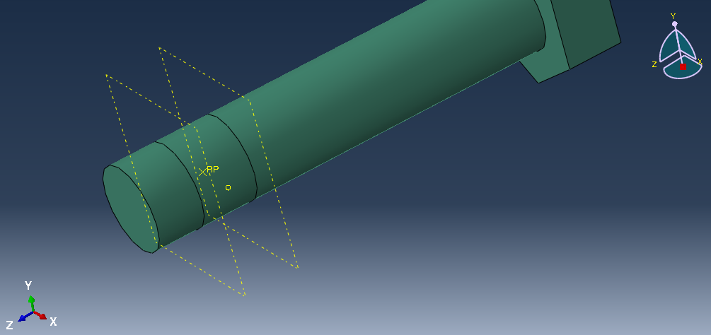
- Now import another instance of the reference point
REFPTand translate it to be coincident withBPT-1. Rename thisNPT-1(standing for Nut Point 1). These two points will have to be on the same geometrical point but equal and opposite forces will be applied for the force application (see 2.2 below for those steps). The pointBPT-1will be coupled to the bolt surfaceBNandNPT-1will be tied to the nut surfaceNBthrough RBE3 elements. Use the "Linear Pattern" dialog and copy the bolt-washer-washer-nut assembly thrice along the beam such that the assembly is complete. The figure below shows the final assembly along with a representation of the names of the different parts. Recall that the beam shown in the figure below is
TOPBEAMand the hidden one isBOTBEAM.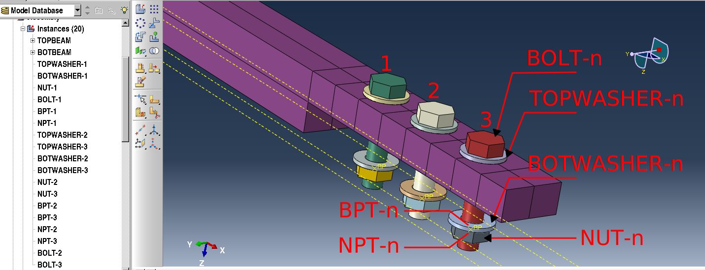
Now that the assembly is complete, the relevant constraints will have to be enforced, followed by a realization of the bolt preload.
2. Constraints
2.1. Tie-Constraint Enforcement Script GUI
All the following operations can be conducted in the Interaction module in CAE.
But since selecting each surface can be a time-consuming process, we use the following for-loop in Abaqus-python (either call it as a script or just copy paste it into the CLI) to make the required tie constraints.
Specifically, it ties the Bolt-Washer, Nut-Washer, and Washer-Beam surfaces.
Note that in the last set of constraints, we recall the fact that the bottom beam is flipped.
So WASHER-1 is tied to BmW3 of the bottom beam (and so on for 2,3).
1: mdl = mdb.models['Model-1'] 2: ras = mdl.rootAssembly 3: 4: for i in range(1, 4): 5: # Bolt-Washer Constraints 6: mdl.Tie(name='BW-%d' %(i), main=ras.instances['TOPWASHER-%d' %(i)].surfaces['WSTOP'], 7: secondary=ras.instances['BOLT-%d' %(i)].surfaces['BlW'], 8: positionToleranceMethod=COMPUTED, adjust=ON, tieRotations=ON, thickness=ON) 9: 10: # Nut-Washer Constraints 11: mdl.Tie(name='NW-%d' %(i), main=ras.instances['BOTWASHER-%d' %(i)].surfaces['WSBOT'], 12: secondary=ras.instances['NUT-%d' %(i)].surfaces['NW'], 13: positionToleranceMethod=COMPUTED, adjust=ON, tieRotations=ON, thickness=ON) 14: 15: # TopWasher-Beam Constraints 16: mdl.Tie(name='BmTW-%d' %(i), main=ras.instances['TOPBEAM'].surfaces['BmW%d' %(i)], 17: secondary=ras.instances['TOPWASHER-%d' %(i)].surfaces['WSBOT'], 18: positionToleranceMethod=COMPUTED, adjust=ON, tieRotations=ON, thickness=ON) 19: 20: # BotWasher-Beam Constraints 21: mdl.Tie(name='BmBW-%d' %(i), main=ras.instances['BOTBEAM'].surfaces['BmW%d' %((3-i)%3+1)], 22: secondary=ras.instances['BOTWASHER-%d' %(i)].surfaces['WSTOP'], 23: positionToleranceMethod=COMPUTED, adjust=ON, tieRotations=ON, thickness=ON)
2.2. Bolt Preload Realization Script GUI
You might already have encountered the different parts of the model above that were carefully constructed for the bolt preload application (bolt-shank partitioning, reference points, etc.).
What 's wrong with the inbuilt Bolt Pretension in ABAQUS?
The Abaqus Approach
- You can find the Abaqus documentation for the bolt load here.
- ABAQUS/CAE applies bolt load by specifying a bolt cross-section, a bolt axis, and the bolt load.
- The documentation for the Abaqus implementation can be found here.
- The load is applied in the context of a constraint:
- It can be a load constraint wherein the displacements/strains at the cross-section are adjusted to match the load.
- It can be a deformation constraint, wherein the loads are adjusted.
- In either case, the bolt load can not be written down as a constant load vector that can be exported/used elsewhere.
- It is therefore not possible to use the inbuilt bolt pretension in a substructured analysis, for example.
- Here are the documented limitations:
- An assembly load cannot be specified within a substructure.
- If a submodeling analysis is performed, any pre-tension section should not cross regions where driven nodes are specified.
- Nodes of a pre-tension section should not be connected to other parts of the body through multi-point constraints.
Our Approach
- Our method of bolt pretension application addresses all the above issues pertaining to substructuring/submodeling by using Distributed Coupling elements (aka RBE3/Spider elements in other FE software).
- We will first couple the bolt-shank area that is in contact with the nut (the thread area) to a 6DOF point (3 translations + 3 rotations), and do the same for the nut inner surface, with another point, using Distributed coupling elements.
- The bolt and nut will be "fastened" by arresting every DOF in these two nodes except the axial DOF. This will ensure that the only relative displacement between the bolt and nut are axial, which may result from tightening/loosening of the bolt.
- A "pulling force" is applied on the bolt-coupling node, which acts as the tension on the bolt, and a "pushing force" is applied on the nut-coupling node, which acts to maintain the system's equilibrium, i.e., fastening.
- It is understood that there is an interface that the assembly is tightening, which should provide the required reaction forces to balance everything out.
- Now, the bolt load is merely a constant force vector which can be manipulated as one desires.
We will now go through the process of specifying this.
First couple the bolt-shank surface
BNwith the appropriate reference point (BPT-n). This can be done in CAE throughInteraction->Create Constraint->Tie. The following is python code that will do this in a loop.24: # Bolt & Nut Point Coupling 25: for i in range(1, 4): 26: mdl.Coupling(name='BPC-%d' %(i), controlPoint=ras.instances['BPT-%d' %(i)].sets['Set-1'], 27: surface=ras.instances['BOLT-%d' %(i)].surfaces['BN'], 28: influenceRadius=WHOLE_SURFACE, couplingType=STRUCTURAL, 29: weightingMethod=UNIFORM) 30: 31: mdl.Coupling(name='NPC-%d' %(i), controlPoint=ras.instances['NPT-%d' %(i)].sets['Set-1'], 32: surface=ras.instances['NUT-%d' %(i)].surfaces['NB'], 33: influenceRadius=WHOLE_SURFACE, couplingType=STRUCTURAL, 34: weightingMethod=UNIFORM)
Now we constrain the X, Y, Rx, Ry, & Rz DOFs (all 5 DOFs other than the Z DOF, which is the bolt-axis) using equation constraints. If the bolt axis is not a principal direction in the model, then the constraint equations must be modified appropriately. Note that this can also be used in the large deformation context through the use of a local coordinate system (the global CS is used here, so applicability is restricted to small deformations). This can be done in CAE through
Interaction->Create Constraint->Coupling. The following code does this through a nested loop such thatBNEQn-mrepresents the mth DOF constraint at the nth location.35: # Equation Constraints constraining bolt and nut ref-points to each other 36: for i in range(1, 4): 37: for j in [1, 2, 4, 5, 6]: 38: mdl.Equation(name='BNEQ%d-%d' %(i, j), 39: terms=((1.0, 'BPT-%d.Set-1' %(i), j), 40: (-1.0,'NPT-%d.Set-1' %(i), j)))
Here is an image showing the constraints applied graphically.
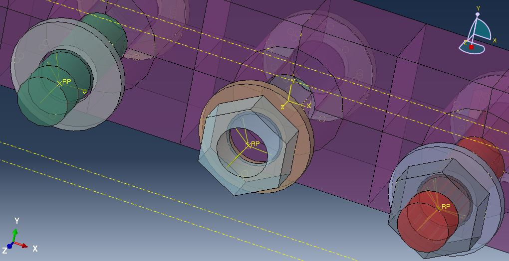
We next create a static analysis step (
Step->Create Step->Static, General) named asPRESTRESS. This can be done in CAE, but here is the Python code.41: mdl.StaticStep(name='PRESTRESS', previous='Initial', nlgeom=ON)
Note: Nonlinear Geometric effects (nlgeom) is set to ON since this was found to be helpful for convergence of prestress analysis.
We finally apply bolt forces as concentrated forces at the
BPT-nandNPT-nreference points. Switch to theLoadmodule to do this from CAE. The following python code applies a tightening load of 12kN to each bolt.42: # Apply forces 43: bpmag = 12e3 # 12kN bolt-load 44: for i in range(1, 4): 45: # Force in +z on bolt-points 46: mdl.ConcentratedForce(name='BoltLoad-%d' %(i), createStepName='PRESTRESS', 47: region=ras.instances['BPT-%d' %(i)].sets['Set-1'], 48: cf3=bpmag, distributionType=UNIFORM) 49: 50: # Force in -z on bolt-points 51: mdl.ConcentratedForce(name='NutLoad-%d' %(i), createStepName='PRESTRESS', 52: region=ras.instances['NPT-%d' %(i)].sets['Set-1'], 53: cf3=-bpmag, distributionType=UNIFORM)
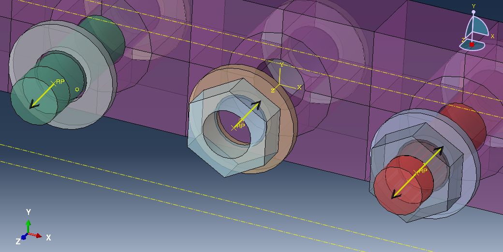
- Note that the bolt load constructed in the above manner is a "linear" load - i.e., the load can be increased/decreased by scaling the resulting force vector.
It is assumed here that all 3 bolts are loaded equally.
If this is not the case, the different loads can be exported separately and scaled appropriately (for external analysis).
It is, however, a physical requirement for equilibrium that
BoltLoad-nandNutLoad-nhave to be of equal magnitude and opposite signs.
The file ../assets/assembly/model_step1.cae stores the CAE-file generated after the end of the above steps. We will now proceed with meshing. CORRECT NW CONSTRAINTS AND REUPLOAD
3. Meshing
Since the model is reasonably symmetric, it is sufficient to mesh the model with a global seed, after seeding the interface area locally.
Switch to the Mesh module for this section.
3.1. Meshing Instructions
Choose
Mesh->Assign Mesh Controlsand select the whole assembly (all the instances). We will use a structured hex-dominated element type for the full model (it will give a warning that this is not possible for certain regions. This is okay).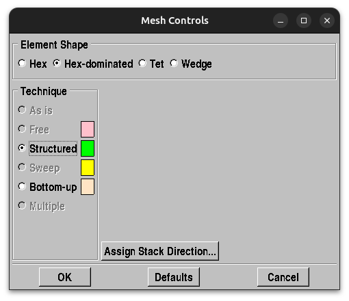
Now choose
Mesh->Seed Part Instanceand select all the instances again. Set 0.00254 as the global mesh seed (to ensure 10 elements across thickness) and 0.05 for curvature control.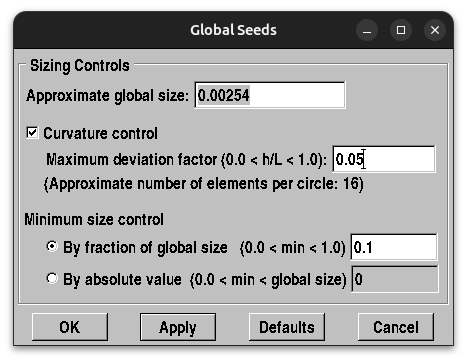
Apply local seeds at the interface as shown here (on both interfaces). Use the
Mesh->Seed Edgestool by choosing the Method as "By Number" and specify the number of elements.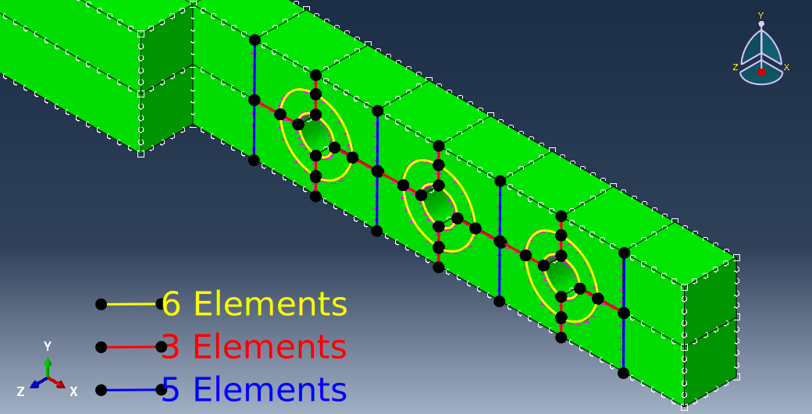
Now mesh the assembly using
Mesh->Mesh Part Instanceand selecting all the part instances. Here is a view of the interfacial mesh you should get after the above seeding.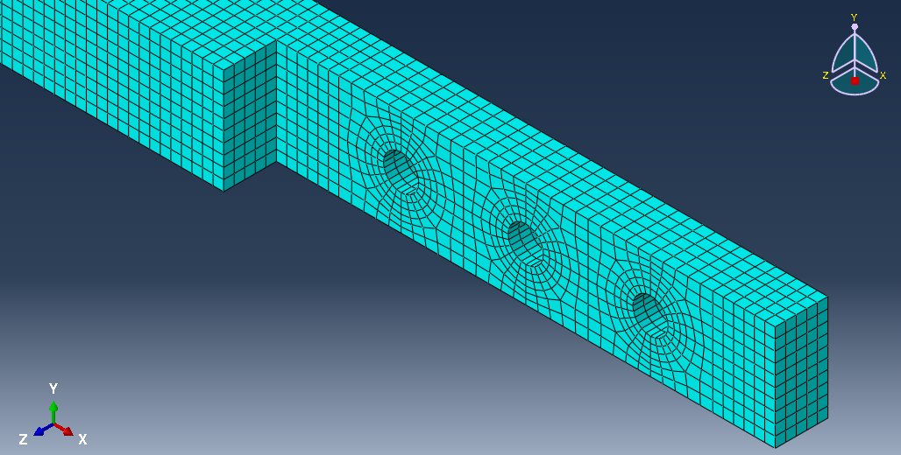
Here is an image of the total assembly with the mesh.
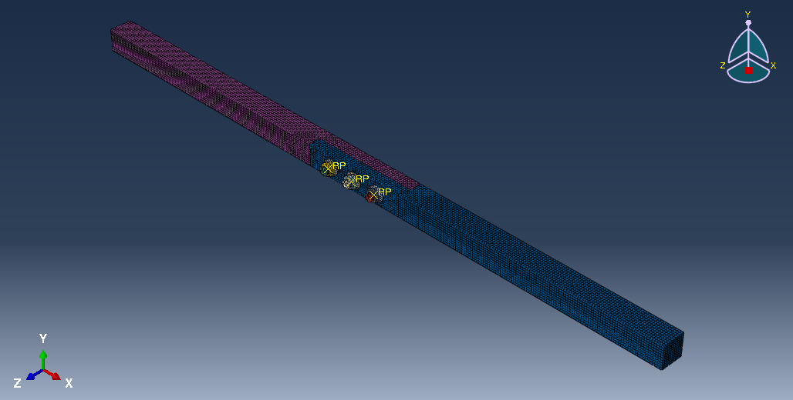
The file ../assets/assembly/model_step1.cae stores the CAE-file along with the mesh. CORRECT NW CONSTRAINTS AND RE-UPLOAD
3.2. (Optional, recommended) Verify correctness of model through frictionless prestress
We will now conduct a simple frictionless contact analysis to verify the correctness of the model.
Setup
For the static prestress analysis, first a surface-to-surface contact interaction property has to be created and assigned. You can do this from CAE starting from
Interaction->Create Interactionand following the steps in the figure below.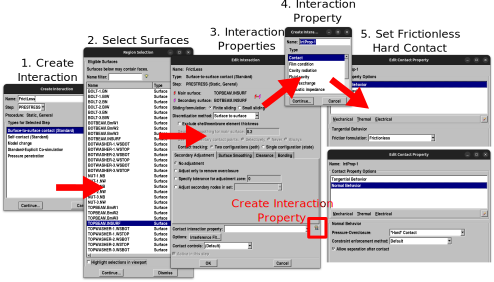
Now create two linear frequency steps, one before and one after the static prestress step, as shown in the figure below. Request 30 eigenvalues in each case.
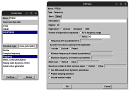
Create 2 jobs. Suppress the interaction property in the first one and have just
FREQ1active (see figure below).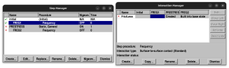 For the second job, suppress
FREQ1and resume the other steps. Resume the surface interaction properties (see figure below).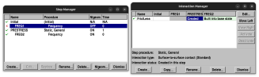 Optionally, field outputs for
FREQ2(by default it will be set to none ifFREQ1is suppressed). You can do this inStep->Create Field Outputs.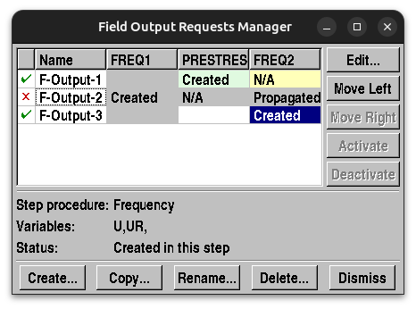
Results
The first analysis should reveal that the system has 7 Rigid Body Modes (RBMs). This is because the two beams are constrained together in all directions except the axial (where tightening has to happen). So the number of RBMs has to be \(2\times 6 - 5 = 7\). The first 10 modal frequencies have to be (frequencies in cycles/time, or Hz):
Index Frequency 1 1.0515e-3 2 1.2851e-3 3 1.4602e-3 4 1.6246e-3 5 1.6592e-3 6 1.8082e-3 7 1.9025e-3 8 70.323 9 151.26 10 609.25 In the above, modes 1-7 are RBMs and modes 8 onwards are the elastic modes. Looking at the mode-shapes should make it clear that the two beams are free to move axially (the following is mode 1, for eg).
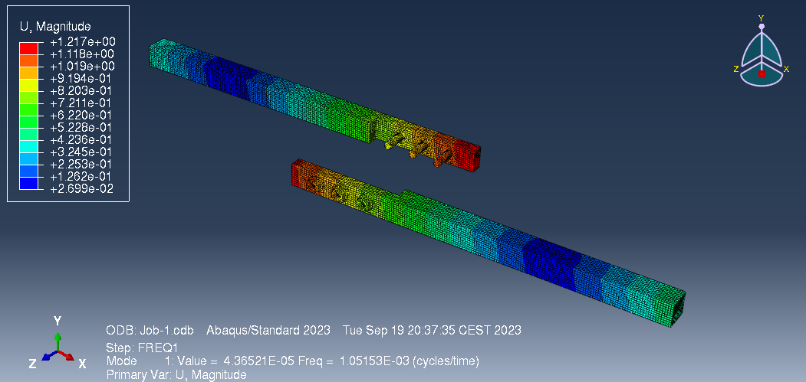
The second analysis should converge within a few iterations. If not, the "Initial Increment Size" in
Step->PRESTRESS->Edit->Increment->Initial Increment Sizehas to be reduced. If it doesn't converge, try to apply a boundary condition to make the problem well-posed, and try again. If it still doesn't converge, check your model again. Here is a picture of the contact pressures at the interface at the end of the static prestress step.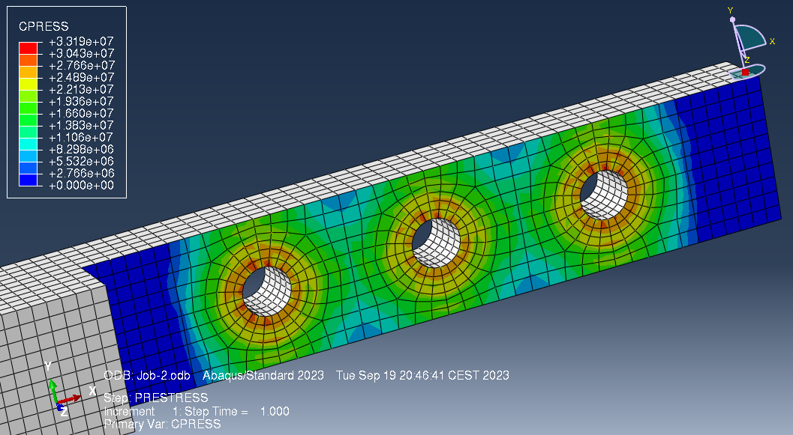
By default, ABAQUS fuses the nodes that are in contact at the end of the hard contact step, for the eigenvalue analysis that follows it (Linear Perturbation step). Since we are using frictionless tangential here, the tangential DOFs are not fused. Here are the first 10 frequencies from the
FREQ2step (frequencies in cycles/time, or Hz):Index Frequency 1 0.00 2 0.00 3 0.00 4 0.00 5 0.00 6 2.2068e-3 7 141.10 8 152.42 9 570.33 10 643.49 It must be observed that the model, under the prestressed state, has only 6 RBMs. In other words, the bolt-axial direction has now been fixed due to the fact that the contact constraints are active on at least one spot on the interface.
- If your model passes all the above, then you are ready to proceed. INCLUDE NOTE ABOUT MESH CONVERGENCE?
The file ../assets/assembly/model_step2.cae is the cae file containing the model with the above tests included.
4. Postprocessing
Now that the model is verified to be correct/consistent, we will proceed with the steps necessary for substructured Matrix Extraction.
Before proceeding it is necessary to first identify nodes on the meshed model that correspond to the input and output locations.
Choose the mid point on the right end as the output node for this tutorial.
Create a node set called OutNodes by selecting Mesh->Tools->Set->Create->Node and choosing the node. Select "unsorted node set" if available.
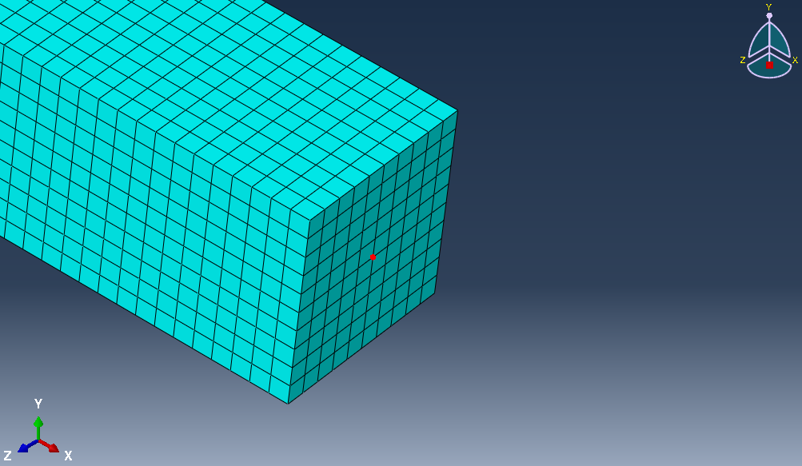 It is possible to choose multiple nodes here if you have a MIMO case.
It is also helpful to use global node and element indexing henceforth.
This can be specified in Model->Edit Attributes->Model-1 as follows:
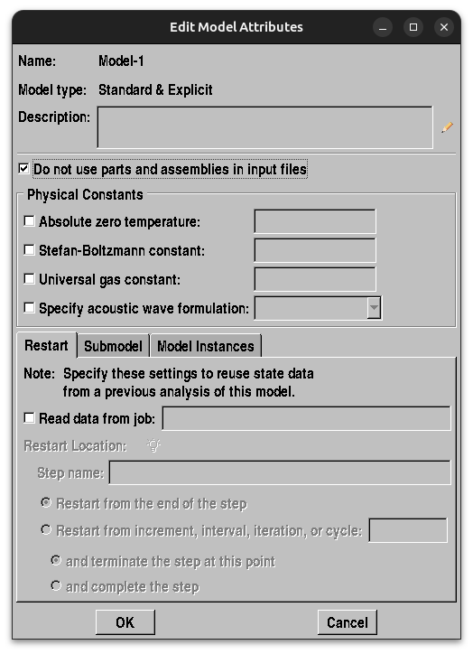
4.1. Reorganize Interfacial Node Sets (readjust if necessary) Script
Although we have taken care to ensure that the mesh of the TOPBEAM and BOTBEAM are conformal at the interface, minor imperfections in the nodal locations may exist.
Furthermore, the ordering of the nodes on the top interface will be different from that on the bottom interface.
Through some scripting, we can create node sets in such a way that the top and bottom interface nodesets are ordered in a convenient fashion.
We use the following slightly modified header for this script:
1: # -*- coding: utf-8 -*- 2: # 1. Preamble 3: import sys 4: import numpy as np 5: 6: from part import * 7: from material import * 8: from section import * 9: from assembly import * 10: from step import * 11: from interaction import * 12: from load import * 13: from mesh import * 14: from optimization import * 15: from job import * 16: from sketch import * 17: from visualization import * 18: from connectorBehavior import * 19: 20: from abaqus import * 21: from abaqusConstants import * 22: from caeModules import * 23: import regionToolset 24: import job 25: import step 26: import sets 27: 28: mdl = mdb.models['Model-1'] 29: ras = mdl.rootAssembly 30: 31: mdl.setValues(noPartsInputFile=ON)
Now we identify the top and bottom surface nodes, and store the top nodes and elements into separate variables. The node and element ordering of the top nodes will be preserved, and the nodes in the bottom will be resorted according to this in #3 below.
32: # 2. Get top & bottom surfaces & nodes 33: topsurf = ras.instances['TOPBEAM'].surfaces['INSURF'] 34: botsurf = ras.instances['BOTBEAM'].surfaces['INSURF'] 35: 36: topnodes = topsurf.nodes 37: botnodes = botsurf.nodes 38: N = len(topnodes) # Number of nodes 39: 40: # Top Nodes & Coordinates 41: Topnd_dict = dict(zip([topnodes[i].label for i in range(N)], range(N))) 42: # maps original node ID (in FE model) to node ID in interface node set 43: TopNdCds = np.array([topnodes[i].coordinates for i in range(N)]) 44: 45: # Top Elements 46: TopEls = np.array([topsurf.elements[i].connectivity for i in range(len(topsurf.elements))]) 47: ELS = np.zeros((TopEls.shape[0], 5), dtype=int) 48: for ne in range(TopEls.shape[0]): 49: elefac = topsurf.elements[ne].getElemFaces() 50: 51: # Gives you the list of faces on the interface (we only expect a single face) 52: fe = np.argwhere([all([Topnd_dict.has_key(x) for x in 53: [elefac[k].getNodes()[i].label for i in range(4)]]) 54: for k in range(6)])[0,0] 55: ELS[ne, 0] = ne 56: # Searches for the face where all the nodes are in the interface and returns those nodes 57: ELS[ne, 1:] = [Topnd_dict[x] for x in [elefac[fe].getNodes()[k].label 58: for k in range(4)]] 59: ELS[ne, :] += 1 60: 61: # Save interfacial nodes & elements to txt files 62: np.savetxt('Nodes.dat', TopNdCds) # Save to dat file 63: np.savetxt('Elements.dat', ELS, fmt='%d')
Now we extract the bottom nodes and sort them.
64: # 3. Node Pairing. We assume len(botnodes)=len(topnodes). 65: botleft = range(N) 66: bts = [] 67: tmi = 0 68: for i in range(N): 69: # Calculates deviation of selected node coordinate on bottom to each 70: # node coordinate on top and "assigns" the closest one to the index. 71: bts.append( 72: botleft.pop( 73: np.argmin( 74: np.linalg.norm( 75: topnodes[i].coordinates-np.array([botnodes[j].coordinates for j in botleft]), 76: axis=1) 77: ) 78: ) 79: )
We now adjust the nodes on the bottom (this affects the FE mesh directly!)
80: # 4. Adjust Nodes on Bottom Beam Interface to Match Top Beam Exactly 81: for i in range(N): 82: ras.editNode(nodes=botnodes[bts[i]:bts[i]+1], 83: coordinates=(topnodes[i].coordinates,))
We now create nodesets for the top (
TOPS_NDS) and bottom (BOTS_NDS).84: # 5. Create Node Sets 85: botpairednds = botnodes.sequenceFromLabels(tuple([botnodes[i].label for i in bts])) 86: # Reordering from the sorting above 87: 88: ras.SetFromNodeLabels(name="TOPS_NDS", 89: nodeLabels=((topnodes[0].instanceName, 90: tuple([topnodes[i].label for i in range(N)])),), 91: unsorted=True) 92: ras.SetFromNodeLabels(name="BOTS_NDS", 93: nodeLabels=((botpairednds[0].instanceName, 94: [botpairednds[i].label 95: for i in range(len(botpairednds))]),), 96: unsorted=True)
Note that we've used the unsorted keyword to ensure that ABAQUS does not reorder the nodesets (default behavior).
We now simplify the model by removing all interaction properties and steps (except initial). One side-effect of doing this is that this removes the bolt loads also, since loads can only be saved when there is a corresponding step! So we will reintroduce the bolt loads in the substructuring step in #8 below.
97: # 6. Simplify model (remove interactions, all steps, etc.) 98: tmp = mdl.interactions 99: while len(tmp) > 0: 100: del tmp[tmp.keys()[-1]] 101: 102: tmp = mdl.interactionProperties 103: while len(tmp) > 0: 104: del tmp[tmp.keys()[-1]] 105: 106: # Remove all steps except initial 107: tmp = mdl.steps 108: while len(tmp) > 1: 109: del tmp[tmp.keys()[-1]]
4.2. Setup Fixed interface CMS (HCB-CMS) with linear frequency and substructure steps
We are interested in Fixed-Interface Component Mode Synthesis with 20 retained modes. So we first do a fixed interface modal analysis and request \(20\times3 = 60\) modes (for ensuring accuracy of the first 20 modes). We fix all the nodes in the nodesets
TOPS_NDSandBOTS_NDS.110: # 7. Create a Frequency Step for fixed interface modal analysis 111: mdl.FrequencyStep(name="Fixed-Int-Modal", previous="Initial", 112: normalization=MASS, eigensolver=LANCZOS, 113: numEigen=60) 114: mdl.EncastreBC(name="TOPFIX", createStepName="Fixed-Int-Modal", 115: region=ras.sets['TOPS_NDS']) 116: mdl.EncastreBC(name="BOTFIX", createStepName="Fixed-Int-Modal", 117: region=ras.sets['BOTS_NDS'])
Next, we create the substructuring step and re-specify the bolt loads (these were removed in #6 above). The bolt loads are specified of unit magnitude and can be scaled during analysis. This by default uses the mode shapes from the previous step and calculates static constraint modes automatically.
118: # 8. Create a substructuring step, specify the modes and retained DOFs 119: mdl.SubstructureGenerateStep(name="HCBCMS", previous="Fixed-Int-Modal", 120: substructureIdentifier=1, 121: retainedEigenmodesMethod=MODE_RANGE, modeRange=((1, 20, 1),), 122: recoveryMatrix=REGION, recoveryRegion=ras.sets['OutNodes'], 123: computeReducedMassMatrix=True) 124: 125: mdl.RetainedNodalDofsBC(name="TOPRET", createStepName="HCBCMS", 126: region=ras.sets['TOPS_NDS'], 127: u1=ON, u2=ON, u3=ON) 128: mdl.RetainedNodalDofsBC(name="BOTRET", createStepName="HCBCMS", 129: region=ras.sets['BOTS_NDS'], 130: u1=ON, u2=ON, u3=ON) 131: 132: # Apply Bolt Loads (1N magnitude) 133: for i in range(1, 4): 134: mdl.ConcentratedForce(name='BoltLoad-%d' %(i), createStepName="HCBCMS", 135: cf3=1.0, region=ras.instances['BPT-%d' %(i)].sets['Set-1']) 136: mdl.ConcentratedForce(name='NutLoad-%d' %(i), createStepName="HCBCMS", 137: cf3=-1.0, region=ras.instances['NPT-%d' %(i)].sets['Set-1']) 138: 139: sbs = mdl.steps['HCBCMS'] 140: sbs.LoadCase(name="LCASE", loads=tuple(('BoltLoad-%d' %(i), 1.0) for i in range(1, 4)) + 141: tuple(('NutLoad-%d' %(i), 1.0) for i in range(1, 4)))
We finally need to request matrix output. Here is the ABAQUS documentation for the
*Substructure Matrix Outputcard. Thus far (until version 2023) ABAQUS CAE doesn't support requesting matrix output from Substructure steps. We have to request this manually in the .inp files. Thankfully we can write to the keywords directly from CAE. Go toModel->Edit Keywords->Model-1to do this in the GUI. In scripting, this is known as a "synch" operation, which is done as follows:142: # 9. Request substructure matrix outputs 143: # ABAQUS CAE doesn't support this yet (GUI or scripting), 144: # so the keywords need to be manually modified. 145: mdl.keywordBlock.synchVersions(storeNodesAndElements=False) 146: 147: li = np.argwhere([mdl.keywordBlock.sieBlocks[i][0:20] == "*Retained Nodal Dofs" 148: for i in range(len(mdl.keywordBlock.sieBlocks))])[0][0] 149: txi = mdl.keywordBlock.sieBlocks[li] 150: mdl.keywordBlock.replace(li, "*Retained Nodal Dofs, sorted=NO"+txi[20:]) 151: 152: mdl.keywordBlock.insert(len(mdl.keywordBlock.sieBlocks)-2, 153: "*Substructure Matrix Output, FILE NAME=Modelmats, MASS=YES, STIFFNESS=YES, SLOAD=YES, RECOVERY MATRIX=YES")
We then create a job and write it to an "inp" file that can be run from ABAQUS.
154: # 10. Create a job and write an inp file 155: mdb.Job(name="Job", model='Model-1') 156: mdb.jobs['Job'].writeInput()
Here is what the final HCBCMS step looks like in this case. The most important part is the
*Substructure Matrix Outputcard in the bottom, which we introduced through the "synch" step in #3 above. Here is the ABAQUS documentation for the*Substructure Matrix Outputcard.** ---------------------------------------------------------------- ** ** STEP: HCBCMS ** *Step, name=HCBCMS, nlgeom=NO *Substructure Generate, overwrite, type=Z1, recovery matrix=YES, nset=OutNodes, mass matrix=YES *Select Eigenmodes, generate 1, 20, 1 *Damping Controls, structural=COMBINED, viscous=COMBINED *Retained Nodal Dofs, sorted=NO BOTS_NDS, 1, 3 TOPS_NDS, 1, 3 ** ** LOAD CASES ** *Substructure Load Case, name=LCASE ** Name: BoltLoad-1 Type: Concentrated force Scale factor: 1 *Cload BPT-1_Set-1, 3, 1. ** Name: BoltLoad-2 Type: Concentrated force Scale factor: 1 *Cload BPT-2_Set-1, 3, 1. ** Name: BoltLoad-3 Type: Concentrated force Scale factor: 1 *Cload BPT-3_Set-1, 3, 1. ** Name: NutLoad-1 Type: Concentrated force Scale factor: 1 *Cload NPT-1_Set-1, 3, -1. ** Name: NutLoad-2 Type: Concentrated force Scale factor: 1 *Cload NPT-2_Set-1, 3, -1. ** Name: NutLoad-3 Type: Concentrated force Scale factor: 1 *Cload NPT-3_Set-1, 3, -1. *Substructure Matrix Output, FILE NAME=Modelmats, MASS=YES, STIFFNESS=YES, SLOAD=YES, RECOVERY MATRIX=YES *End Step
4.3. Run Job and Generate the mtx file.
You can now run the Job named "Job" in the GUI, or directly run the "Job.inp" file from the command line using
abaqus job=Job inp=Job.inp cpus=2 interactive
Once the job is done, it will output the matrix file "Modelmats.mtx" into the working directory. This, along with the "Nodes.dat" and "Elements.dat" files that were written out earlier, are all we need for external analyses.
5. Matrix Extraction
By default, ABAQUS uses the matrix market format for the outputted matrices. Note the following, in terms of format:
- Each line that starts with an asterix ("*") is a comment.
- The linear matrices of the current model are fully symmetric.
- So only the upper triangular parts of the matrices are exported.
- The load vector is exported as a vector.
- Columns of the recovery matrix \(R\), defined by \[ x_{out} = R x_{cms} \] where \(x_{cms}\) is the vector of DOFs of the CMS model (substructure) and \(x_{out}\) are the output DOFs. Each column of \(R\) is \(N_{out}\times 1\), and \(R\) is \(N_{out}\times N_{cms}\).
5.1. Postprocessing Exported Matrices
- The first few lines provide the generalized coordinates of the model. The nodes are listed as positive integers and the "modal" DOFs are listed as negative integers. This is followed by a list of DOFs active in each set.
The STIFFNESS and MASS matrices are respectively prepended by
* MATRIX,TYPE=STIFFNESS <Stiffness matrix entries in upper triangular form> * MATRIX,TYPE=MASS <Mass matrix entries in upper triangular form>
The load vector (the bolt prestress load, here) is written as,
** SUBSTRUCTURE LOAD CASE VECTOR. SLOAD CASE <name> ***CLOAD ** 1, 1, <entry> ** 1, 2, <entry> ** 1, 3, <entry> . . .
Finally, the recovery matrix is provided row-by-row as
* SUBSTRUCTURE RECOVERY VECTOR CORRESPONDING TO RETAINED DOFS NUMBER 1 <entries> * SUBSTRUCTURE RECOVERY VECTOR CORRESPONDING TO RETAINED DOFS NUMBER 2 <entries> . . .
- In the actual file, the order is STIFFNESS, LOAD, MASS, then SUBSTRUCTURE.
The following Bash script processes the output (a stiffness, a mass, a load case, and recovery entries are expected)
#!/bin/sh if [ $# = 2 ] then echo "Correct call!" OUT=$2 elif [ $# = 1 ] then echo "Acceptable call!" a="$1" OUT="${a%.*}.mat" else echo "Wrong call - quitting!" fi echo "Preprocessing mtx files" gawk 'BEGIN{mstart=0;} ($1~/^\*M/){mstart++; next} (mstart==1){if($1!~/^\*/){print}else{exit}}' $1|gawk 'BEGIN{RS=",";ORS="\n"}{print}'|gawk '(NF!=0){print}' > ./.STIFFNESS.mtx gawk 'BEGIN{mstart=0;} ($1~/^\*M/){mstart++; next} (mstart==2){if($1!~/^\*/){print}else{exit}}' $1|gawk 'BEGIN{RS=",";ORS="\n"}{print}'|gawk '(NF!=0){print}' > ./.MASS.mtx gawk 'BEGIN{vstart=0;} ($0~/^\*\*\*C/){vstart++; next} (vstart>0){print $2,$3,$4} (vstart>0 && $1!~/^\*\*/){exit}' $1|gawk 'BEGIN{FS=","}{for(i=1;i<=NF;i++)printf("%s ", $i);printf("\n")}' > ./.FVEC.mtx gawk 'BEGIN{rstart=0} ($0~/^\*\* SUBSTRUCTURE REC/){rstart++; if(rstart>1){printf("\n")}next} (rstart!=0 && $1~/\*\*/){for(i=2;i<=NF;i++)printf("%s",$i);}' $1|gawk 'BEGIN{FS=","}{for(i=1;i<=NF;i++)printf("%s ",$i); printf("\n");}' > .RECOV.mtx echo "Preprocessing mtx files done" python <<EOF import numpy as np import scipy.io as io print("Reading Mass Matrix from mtx file."); Mv = np.loadtxt('.MASS.mtx'); print("Done."); print("Reading Stiffness Matrix from mtx file."); Kv = np.loadtxt('.STIFFNESS.mtx'); print("Done."); print("Reading Recovery Matrix from mtx file."); R = np.loadtxt('.RECOV.mtx'); print("Done."); print("Processing Matrices.") Nelm = len(Mv); Nelk = len(Kv); if (Nelm!=Nelk): sys.exit("GIGO - Mass & Stiffness not of same length."); Nel = Nelm; Nd = ((np.sqrt(1+8*Nel)-1)/2).astype(int); # Solution of Nd(Nd+1)/2-Nel = 0 M = np.zeros((Nd,Nd)); K = np.zeros((Nd,Nd)); (xi,yi) = np.tril_indices(Nd); M[xi,yi] = Mv; M[yi,xi] = Mv; K[xi,yi] = Kv; K[yi,xi] = Kv; print("Done.") print("Reading Forcing Vector from mtx file."); Fvdat = np.loadtxt('.FVEC.mtx'); print("Done."); print("Processing Force Vector."); Fv = np.zeros(M.shape[0]); ids = range(np.where(np.diff(Fvdat[:, 1])==0)[0][0], Fvdat.shape[0]) n1dofnds = Fvdat[ids, 0].astype(int) n3dofnds = Fvdat[list(set(range(Fvdat.shape[0]))-set(ids)), 0].astype(int) Fv[((n3dofnds-1)*3+np.kron(np.ones(int(len(n3dofnds)/3)),[0, 1, 2])).astype(int)] = Fvdat[list(set(range(Fvdat.shape[0]))-set(ids)), 2] print("Whew.") Fv[range(-len(n1dofnds), 0)] = Fvdat[ids, 2] print("Done.") print("Matrix extraction complete - writing mat file") dict = {"M": M, "K": K, "R": R, "Fv": Fv}; io.savemat(".out.mat",dict); print("Processing Over") EOF mv .out.mat $OUT rm .STIFFNESS.mtx .MASS.mtx .RECOV.mtx .FVEC.mtx
- This bash script first uses GNU Awk, a simple but powerful utility that allows line-by-line parsing of files.
- The script also uses the cut utility from GNU coreutils for manipulations.
- Finally, the script uses Python (compatible with 2/3), involving numpy and scipy.io, for converting the quantities into a MATLAB mat-file that can be loaded on MATLAB.
This script can be called as follows:
./readwritematvec.sh Modelmats.mtx
- In windows, this can be done either through Cygwin or Windows Subsystem for Linux.
- It may be possible to do this natively in MATLAB, but since this requires a line-parser, awk is better suited for the job than MATLAB. A MATLAB implementation might require loading the whole file into memory for speed. Line-parsing on MATLAB was extremely slow for me.
The file ../assets/assembly/model_step3.cae is the final cae file that contains all of the above.
5.2. Simple Analysis on MATLAB/OCTAVE
We will now do our first nonlinear analysis on MATLAB/OCTAVE with the exported matrices. We will conduct a Nonlinear Prestress Analysis for a frictionless contact with a unilateral spring on the normal direction. TO BE ADDED SOON
6. Outro/Contact Details
In summary, all the scripts used in the tutorial are provided in
- https://github.com/Nidish96/Abaqus4Joints/blob/main/scripts/a_steelmat.py: Loading material
- https://github.com/Nidish96/Abaqus4Joints/blob/main/scripts/b_halfbm.py: Building the half-beam model
- https://github.com/Nidish96/Abaqus4Joints/blob/main/scripts/c_nutwasherbolt_516.py: Building the bolt, nut, & washer models.
- https://github.com/Nidish96/Abaqus4Joints/blob/main/scripts/d_applyconstraints.py: Applying the relevant constraints and introducing bolt prestress.
- https://github.com/Nidish96/Abaqus4Joints/blob/main/scripts/e_nodeproc.py: The postprocessing script create surface node sets and setting up substructure analysis.
- https://github.com/Nidish96/Abaqus4Joints/blob/main/scripts/readwritematvec.sh: Contains the mtx reading script written with
bashandpython.
You can contact me at nidish.balaji@ila.uni-stuttgart.de or nidbid@gmail.com for any questions/suggestions.